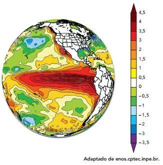
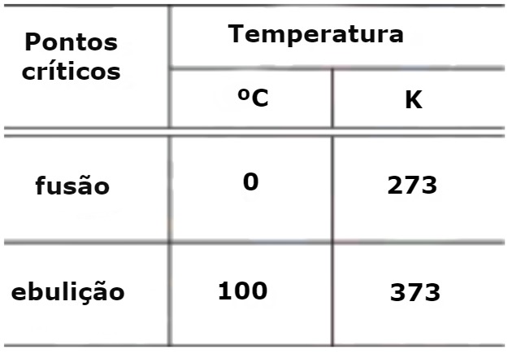

Qual o motivo desse procedimento?
I) Calor é uma forma de energia.
II) Calor é o mesmo que temperatura.
III) A grandeza que permite informar se dois corpos estão em equilíbrio térmico é a temperatura. Está(ão) correta(s) apenas:
|
a) I. b) II. |
c) III. d) I e II. |
e) I e III. |
|
a) -387,25 e -194,65. b) + 159,05 e + 351,65. |
c) + 387,25 e + 194,65. d) -159,05 e -351,68. |
e) +159,05 e -351,68. |
Deduziu que a uma temperatura de -273,15 ºC, também chamada de zero absoluto, a agitação térmica das moléculas deveria cessar. Considere um recipiente com gás, fechado e de variação de volume desprezível nas condições do problema e, por comodidade, que o zero absoluto corresponde a –273 ºC.
É correto afirmar:
a) O estado de agitação é o mesmo para as temperaturas de 100 ºC e 100 K.
b) À temperatura de 0 ºC o estado de agitação das moléculas é o mesmo que a 273 K.
c) As moléculas estão mais agitadas a –173 oC do que a –127 ºC.
d) A -32 º as moléculas estão menos agitadas que a 241 K.
e) A 273 K as moléculas estão mais agitadas que a 100 ºC.
a) dividimos a escala em 100 partes iguais.
b) associamos o zero da escala ao estado de energia cinética mínima das partículas de um sistema.
c) associamos o zero da escala ao estado de energia cinética máxima das partículas de um sistema.
d) associamos o zero da escala ao ponto de fusão do gelo.
e) associamos o valor 100 da escala ao ponto de ebulição da água.
A diferença entre essas temperaturas, na escala kelvin, é de
|
a) 12. b) 21. |
c) 263. d) 285. |
e) 24. |
a) para que o termômetro entre em equilíbrio térmico com o corpo do paciente.
b) para que o mercúrio, que é muito pesado, possa subir pelo tubo capilar.
c) para que o mercúrio passe pelo estrangulamento do tubo capilar.
d) devido à diferença entre os valores do calor específico do mercúrio e do corpo humano.
e) porque o coeficiente de dilatação do vidro é diferente do coeficiente de dilatação do mercúrio.
Em seu estado natural mais comum, é um líquido transparente, sem sabor e sem cheiro, mas que assume a cor azul-esverdeada em lugares profundos. Possui uma densidade máxima de 1 g/cm³ a 4ºC, e o seu calor específico é de 1 cal/gºC (…).
(Macedo, Magno Urbano de & Carvalho, Antônio. Química, São Paulo: IBEP, 1998. p. 224-5)
Utilizando-se a escalar Kelvin, o valor da temperatura na qual a água possui densidade máxima é igual a
|
a) 180. b) 212. |
c) 269. d) 277. |
e) 378. |

Determine, em kelvin, o módulo da variação entre a maior e a menor temperatura da escala apresentada.

Considere que, no intervalo de temperatura entre os pontos críticos do gelo e da água, o mercúrio em um termômetro apresenta uma dilatação linear.
Nesse termômetro, o valor na escala Celsius correspondente à temperatura de 313 K é igual a:
|
a) 20. b) 30. |
c) 40. d) 60. |
Na escala Kelvin, esta temperatura vale:
|
a) 77 K. b) 100 K. |
c) 196 K. d) 273 K. |
e) 469 K. |
Supondo que os grilos estivessem cantando, em média, 156 vezes por minuto, de acordo com o modelo sugerido nesta questão, estima-se que a temperatura deveria ser igual a:
|
a) 21,5 °C. b) 22 °C. |
c) 23 °C. d) 24 °C. |
e) 25,5 °C. |
|
a) 20 °C. b) 30 °C. |
c) 40 °C. d) 50 °C. |
e) 60 °C. |
a) É definido como sendo a energia mecânica média contida em um corpo.
b) É definido como sendo a energia cinética total contida em um corpo.
c) É definido como sendo a energia que flui entre corpos devido à diferença de temperatura desses corpos.
d) É definido como sendo a energia elétrica média das moléculas de um corpo.
e) É definido como sendo a energia potencial gravitacional de um corpo.
a) Grandeza física vetorial, motivada pela diferença de temperatura entre dois corpos.
b) Grandeza física escalar, que indica a vibração molecular.
c) Grandeza física adimensional, que indica a temperatura das substâncias.
d) Grandeza física escalar, motivada pela diferença de temperatura entre corpos.
e) Grandeza física unidimensional, que indica se um corpo está quente ou frio.
Do ponto de vista científico, que situação prática mostra a limitação dos conceitos corriqueiros de calor e temperatura?
a) A temperatura da água pode ficar constante durante o tempo em que estiver fervendo.
b) Uma mãe coloca a mão na água da banheira do bebê para verificar a temperatura da água.
c) A chama de um fogão pode ser usada para aumentar a temperatura da água em uma panela.
d) A água quente que está em uma caneca é passada para outra caneca a fim de diminuir sua temperatura.
e) Um forno pode fornecer calor para uma vasilha de água que está em seu interior com menor temperatura do que a dele.
|
a) com febre alta, mais de 39°C. b) com temperatura menor que 36°C. |
c) com a temperatura normal de 36°C. d) com temperatura de 38°C. |
e) com temperatura de 34,6°C. |
a) O calor flui dos corpos mais quentes em direção aos corpos de menor temperatura.
b) O equilíbrio térmico é atingido quando dois ou mais corpos encontram-se a mesma temperatura.
c) O calor flui espontaneamente entre corpos com diferentes temperaturas.
d) O equilíbrio térmico é atingido quando dois ou mais corpos recebem a mesma quantidade de calor.
e) Chamamos de equilíbrio térmico a situação em que um corpo não realiza mais trocas de calor, uma vez que sua temperatura é exatamente igual à de suas vizinhanças.